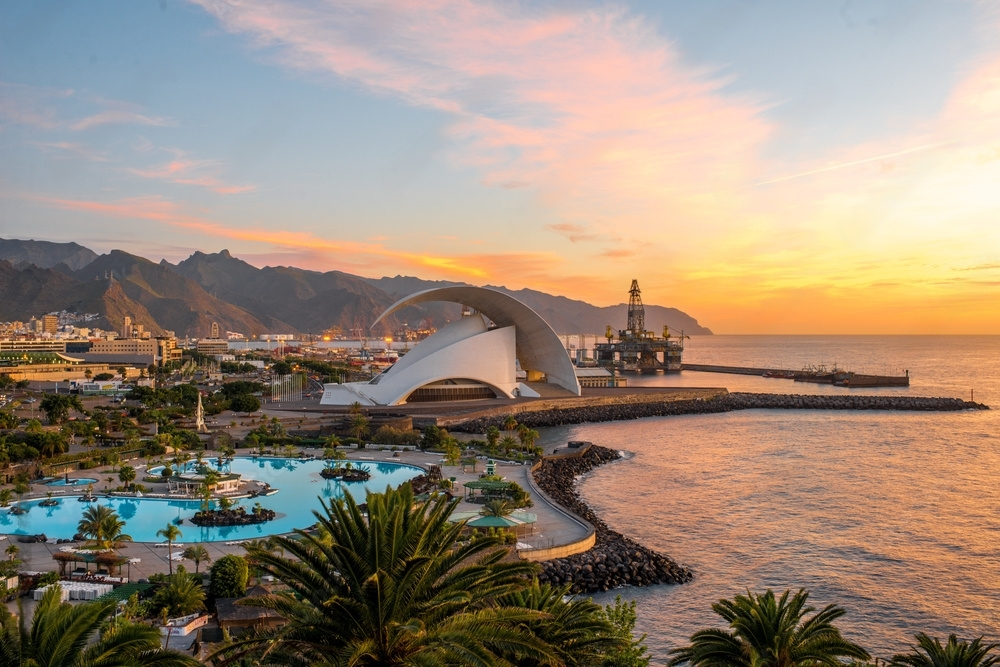
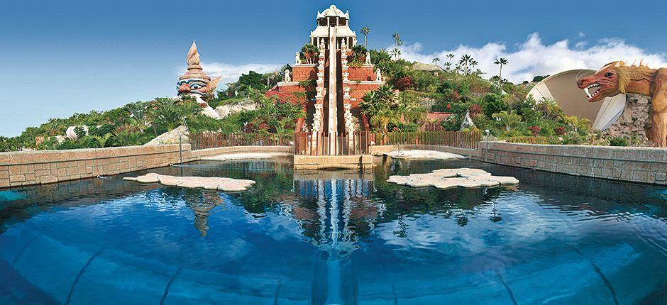
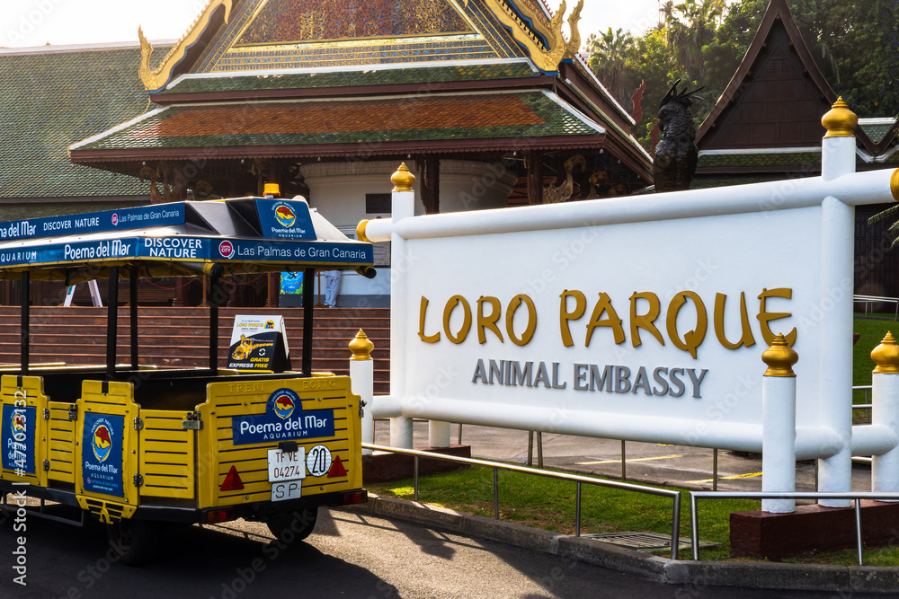
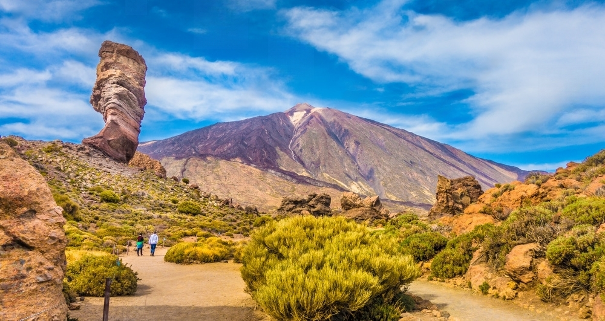
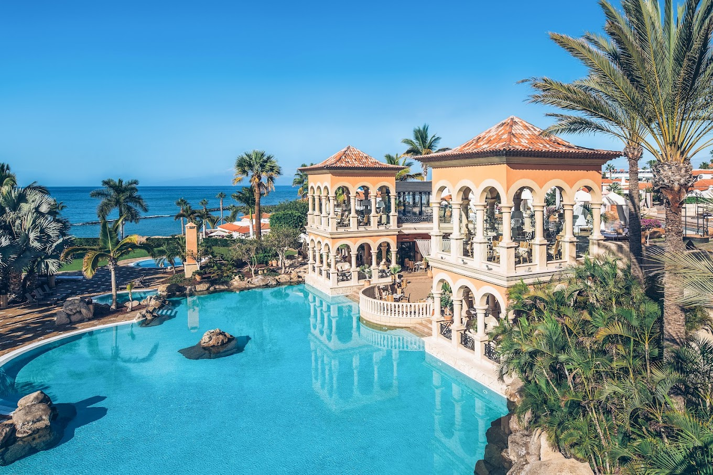
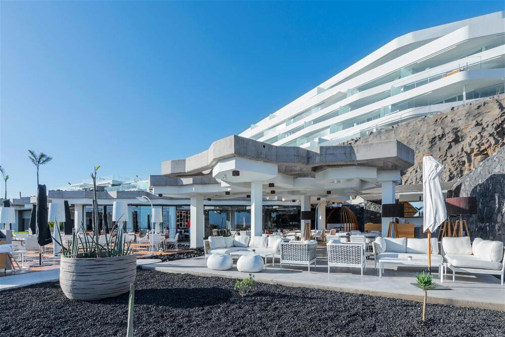
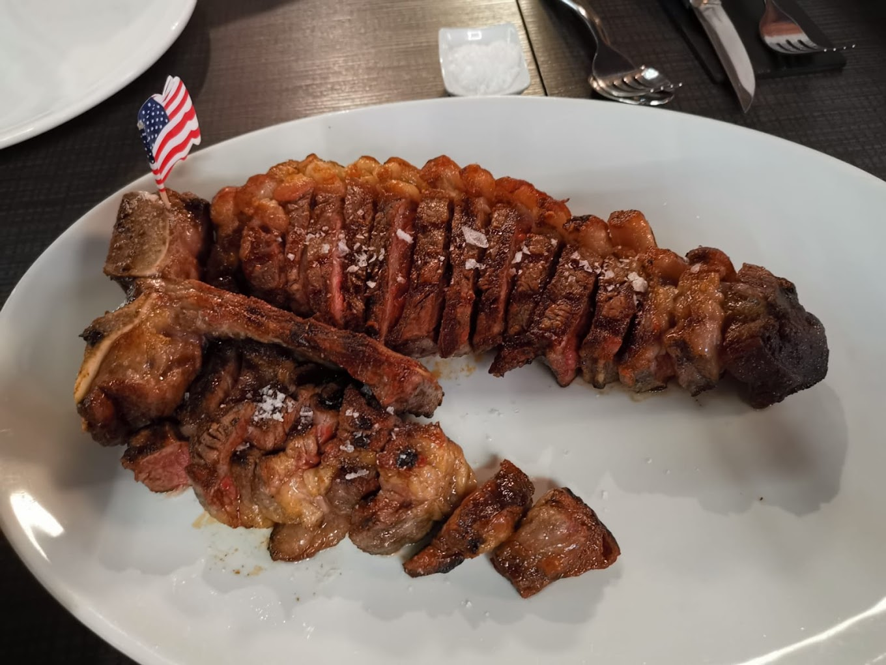
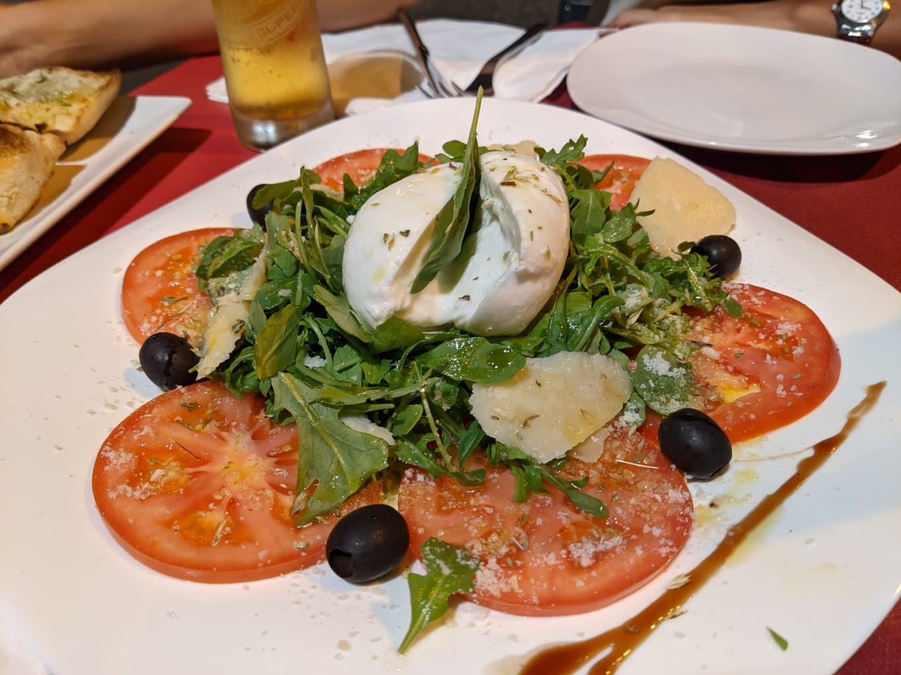
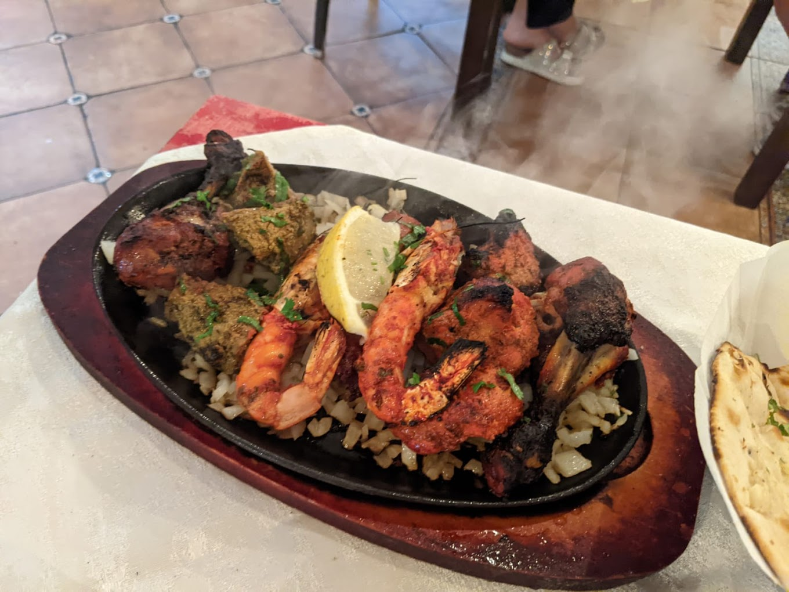

Tenerife
Tenerife tiene la mezcla perfecta de descanso y relax y aventura al aire libre. Por supuesto, puedes tomar el sol en playas de arena dorada, disfrutar de una comida sofisticada o quedarte en el complejo turístico con todo incluido. Pero la isla cuenta con muchas maravillas naturales que te harán cambiar tus sandalias por botas de senderismo rápidamente. Pasa el día en el Parque Nacional del Teide y explora sus paisajes lunares, sube al Teide, el volcán más alto de España, y, por la noche, contempla las estrellas. También puedes salir al mar abierto para avistar ballenas y disfrutar de las impresionantes vistas de los acantilados de Los Gigantes. Si buscas algo más discreto, da un paseo por San Cristóbal de la Laguna y contempla la arquitectura colonial o para en un viñedo (hay más de 70 para elegir) y prueba los vinos locales. Hay muchas más cosas que hacer y, a continuación, te ofrecemos algunas recomendaciones.
Qué hacer
Lugares que visitar, formas de perderse y experiencias únicas que definen Tenerife.

Siam Park
Parques temáticos y de atracciones, parques acuáticos

Loro Parque
Zoos

Parque Nacional El Teide
Formaciones geológicas, Montañas
Dónde alojarse
Mejores alojamientos para descansar: con encanto, clásicos o modernos.

Iberostar Selection Anthelia

Iberostar Grand El Mirador

Royal Hideaway Corales
Dónde comer
Lugares de calidad probada, además de los favoritos de los residentes y las joyas ocultas.

Etéreo by Pedro Nel
Europea, Española, Saludable

Plazale Pizzeria
Italiana, Pizza, Napolitana

Torvicas Spice Village
India, Asiatica, Opciones vegetarianas